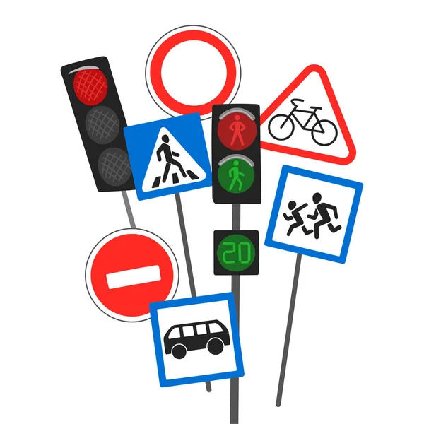
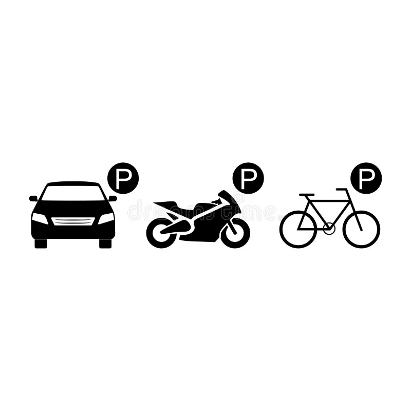
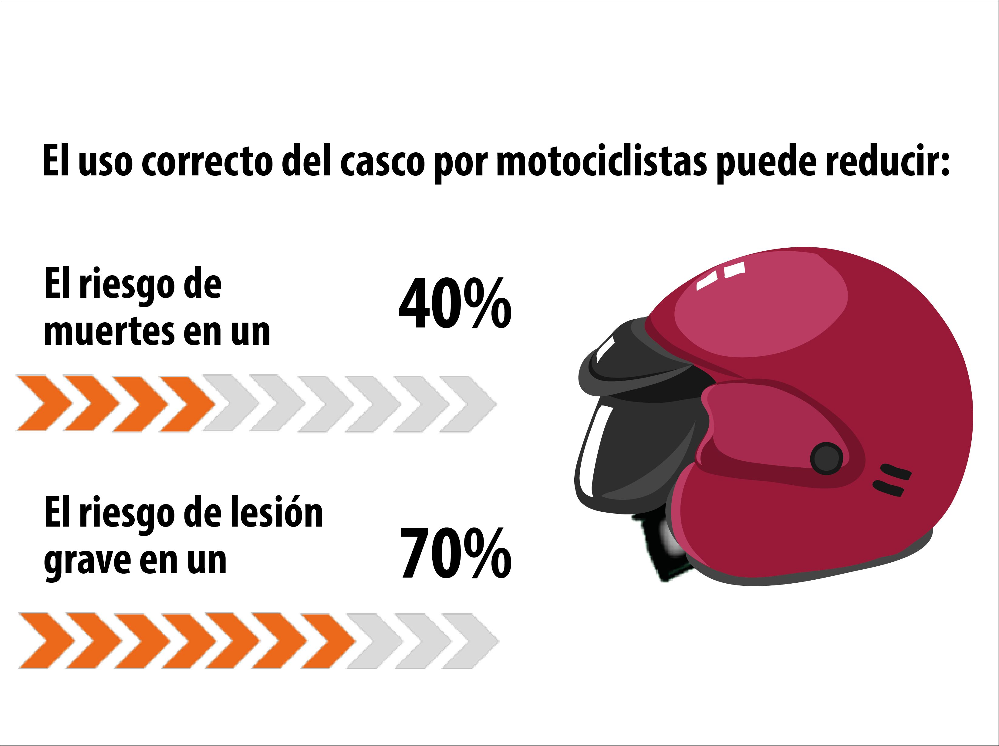
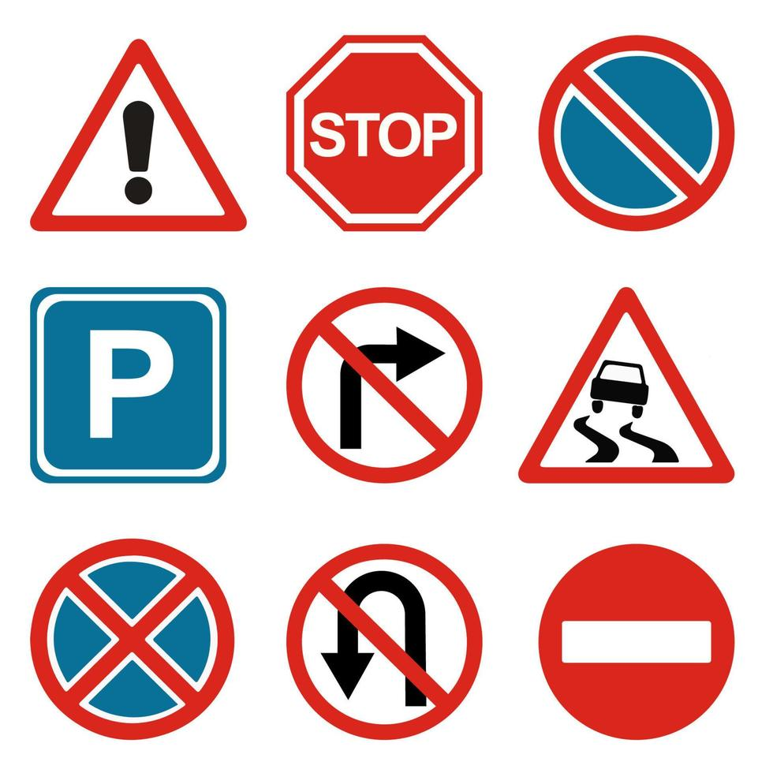
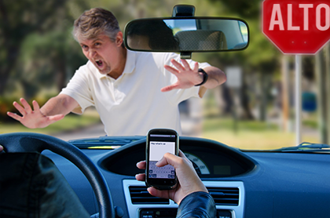
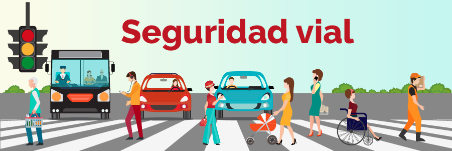

Materia: Cultura Digital
Grado y Grupo: 2° "G"
Alumna: Andrea Josefina Eugenio Romero
Docente: Mariano García Jiménez
Fecha de entrega: 05/06/2026
Promoviendo la seguridad vial entre los estudiantes.
La seguridad vial es fundamental para proteger la vida y el bienestar de todas las personas que transitan por las calles y carreteras. Conducir de manera responsable, respetar las señales de tránsito y utilizar el equipo de protección adecuado son acciones que ayudan a prevenir accidentes y a mantener un entorno más seguro para todos.
Promover la seguridad vial entre los estudiantes y la comunidad, fomentando una conducción responsable y el respeto a las normas de tránsito. Asimismo, concientizar sobre la importancia del uso del cinturón de seguridad, el casco y otras medidas preventivas que contribuyen a reducir accidentes y proteger la vida de conductores, pasajeros y peatones.

El cinturón de seguridad es un dispositivo de protección diseñado para mantener a los ocupantes del vehículo en su asiento durante una colisión o frenado brusco. Su función principal es reducir el riesgo de lesiones graves o la muerte, evitando que las personas sean lanzadas contra el interior del vehículo o expulsadas de él. Por esta razón, su uso es fundamental para la seguridad de conductores y pasajeros.

El casco es uno de los elementos de seguridad más importantes para motociclistas y ciclistas, ya que protege la cabeza de golpes y lesiones graves en caso de accidente. Su uso adecuado reduce significativamente el riesgo de traumatismos y puede salvar vidas. Además, brinda mayor seguridad y confianza durante los desplazamientos, por lo que es indispensable utilizarlo siempre que se conduzca una motocicleta o bicicleta.

Las señales de tránsito son dispositivos colocados en calles y carreteras que tienen la función de informar, advertir y regular la circulación de vehículos y peatones. Su importancia radica en que ayudan a mantener el orden, prevenir accidentes y garantizar la seguridad de todas las personas que utilizan la vía pública. Respetar las señales de tránsito es una responsabilidad fundamental para una conducción segura y responsable.

Utilizar el celular mientras se conduce es una de las principales causas de accidentes de tránsito, ya que distrae la atención del conductor y reduce su capacidad de reacción ante cualquier situación de peligro. Acciones como enviar mensajes, realizar llamadas o revisar redes sociales pueden provocar choques, atropellamientos y otros accidentes graves. Por ello, es importante evitar el uso del teléfono al conducir y mantener siempre la atención en el camino.

Para conocer más sobre la seguridad vial visita el siguiente video:
Ver video sobre Seguridad VialLa seguridad vial es una responsabilidad que debemos asumir todos los días. Acciones como respetar las señales de tránsito, utilizar el cinturón de seguridad, usar casco y evitar el uso del celular mientras se conduce contribuyen a prevenir accidentes y proteger la vida de conductores, pasajeros y peatones. A través del proyecto "CBTIS 67 Conduce Más Seguro", se busca fomentar una cultura de responsabilidad y conciencia vial, promoviendo hábitos que ayuden a construir un entorno más seguro para toda la comunidad.
Página elaborada por Andrea Josefina Eugenio Romero para la materia de Cultura Digital.